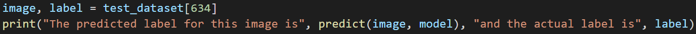

2 Sep, 2021
We now have a trained model. If your model performs well, we need to try it on samples because what is the use of a model that you won't use?
Models in Pytorch accept a batch of images at once, not single images, so we'll need to take an image and convert it into a batch of one image using the unsqueeze() function. Now that we have our batch, We make the predictions, then we call the torch.max() function. We call this function on the output and store the index in a variable called preds. We set dim to 1 because we want the maximum value in each prediction made for an image. Because we have one image, preds is a one-dimensional tensor that consists of one element. We take that element and convert it into an integer using .item() then see what class does that index correspond to.
Now we can call the function on an image in the test dataset.
Saving is pretty simple! All you do is call torch.save() on the model's parameters which you can get by calling model.state_dict() and giving the file a name.
To load a Pytorch model, you first need an architecture that is the same as the model you saved, then you call torch.load() on the file path then call the .load_state_dict() method of the model to load the parameters to the new model. Don't forget to call .eval() to start inference.
So that's it! We were able to make a model and train it and test it! WOOHOO! This was the end of the course. If you liked it, please do tell me! Thanks!